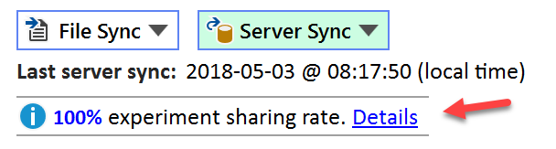

Server Access Control (SAC)
What is Server Access Sontrol?
Without Server Access Control (SAC) being implemented, all finalized experiments synchronized to the Espresso ELN server are accessible by all other users. While providing maximum data sharing benefits across many ELN functionalities, sometimes users have reasons to be hesitant to share their experiments immediately, or some special business restrictions may apply.
In order to address such concerns towards immediate data sharing, SAC was introduced. After installation of the required infrastructure by the Espresso ELN server administrator, this allows group supervisors to specify sharing options for the experiments of their coworkers. This ranges from sharing server experiments immediately after finalization, as before SAC, to never sharing them at all. The most important option however is delayed sharing, where the number of days between experiment finalization and public accessibility on the server can be configured. This might well be an optimal compromise between the need for confidentiality and the enormous benefits of data sharing; thus, sharing an experiment e.g. a year after finalization most likely won't be as critical anymore as sharing it immediately. It is also possible to internally share experiments within a user group before they are are shared with all other users. For highly confidential work, e.g. strictly controlled contract work for a third party, it's even possible to create an isolated group, in which the experiments of its members are never shared, not even among same group members. The SAC Section of the ServerAdmin Tool topic describes the options available to a supervisor (and administrator) in more detail.
How to implement SAC?
The SAC infrastructure needs to be installed by your Espresso ELN server administrator. The required ELN Admin Tool is part of the Espresso ELN Server Package from version 2.0 on, which is available for download from the ChemBytes website.
Important: Please note that the Espresso ELN 8.4.0 client or higher is required for interacting with SAC.
Installation of the SAC infrastructure is optional, the Espresso ELN client and the server database are designed to function normally in its absence. If SAC is not implemented, all server experiments by default remain visible to the other users after finalization, just as before the introduction of SAC. The same is true for all experiments of users which are not registered into SAC.
Public sharing rate
Whenever the SAC infrastructure is in place, a number of server experiments may not be accessible due to applied sharing restrictions. Since the percentage of inaccessible server experiments strongly influences the quality of searches and overall summaries, feedback about the current public sharing rate is displayed just below the sync buttons of the Dashboard section.

Clicking the Details link displays a summary of all supervisor group settings and their sharing rates. In case of low overall public sharing rates, this may help to locate the issues.
Impact on ELN Results
Whenever SAC determines an experiment to be inaccessible by the current user, it is excluded form all results in the server parts of the Search & Summary Sections and in the automatic Novelty Checks. In the Schemes Section, the intermediates of unsharable experiments are replaced by symbolic placeholders to preserve the reaction sequences.